Introduction
This project aims to investiage the accessibility of OK/Cancel popup dialogs across different websites/interfaces, comparing usability via different modes of use to identify best practices and suggest potential improvements.
Details
I will be analysing subscription/discount popups on three popular retail websites I have identified:
- Alo Yoga
- Lululemon
- Aritzia
Component Comparison
Alo Yoga
Process:
First State: Popup appears, asking for an email and a selection (Women/Men/Both).
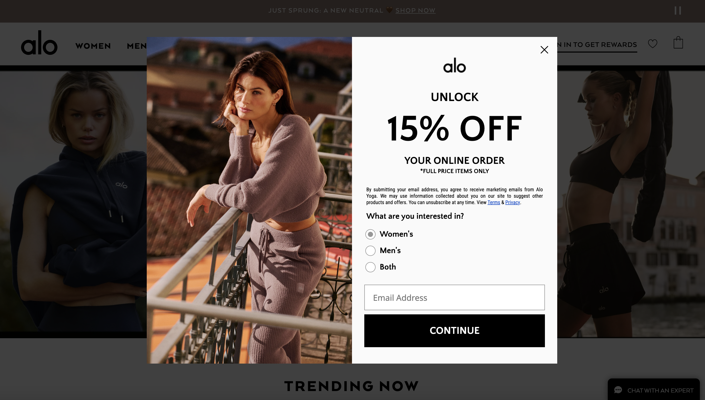Second State: Clicking "Continue" brings up a second page asking for a phone number (email is already submitted at this point, even though it is not clear). Asks for a phone number to actually get the discount (somewhat deceptive)
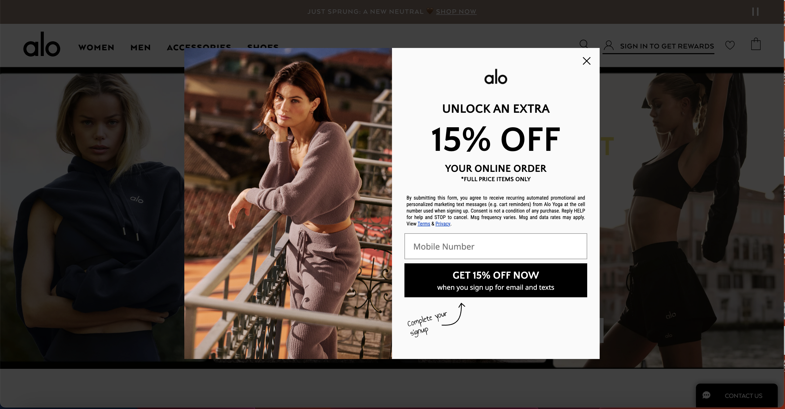Final State: Clicking the "Get 15% off now" button sends a phone confirmation, once confirmed, the popup disappears.
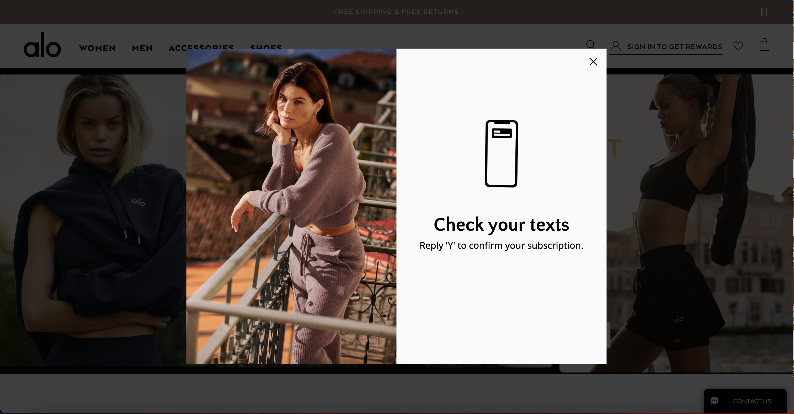Learnability, memorability, efficiency:
Learnability: The multiple steps needed, as well as the confusing submission of email, followed by asking the user to put in their phone number in order to actually get the discount makes this not very learnable
Memorability: Users may struggle to remember how this popup works
Efficiency: This popup is not very efficient, as the email and phone number submission boxes are on different pages
Lululemon
Process:
First State: Popup appears, asking for an email.
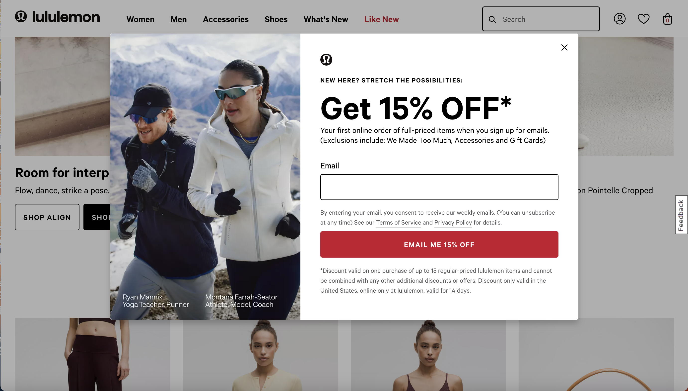Second State: Clicking the "Email me 15% off" button immediately sends a discount email to the inputted account.
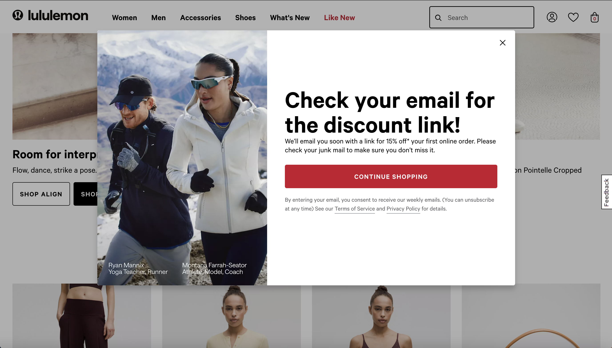Final State: A new page appears; clicking "Continue Shopping" closes the popup.
Learnability, memorability, efficiency:
Learnability: This popup process is very straightforward and easy to understand
Memorability: Users will have an easy time remembering how this popup works
Efficiency: This popup is efficient, as users just submit emails then can close the popup
Aritzia
Process:
First State: Popup appears, asking for an email.
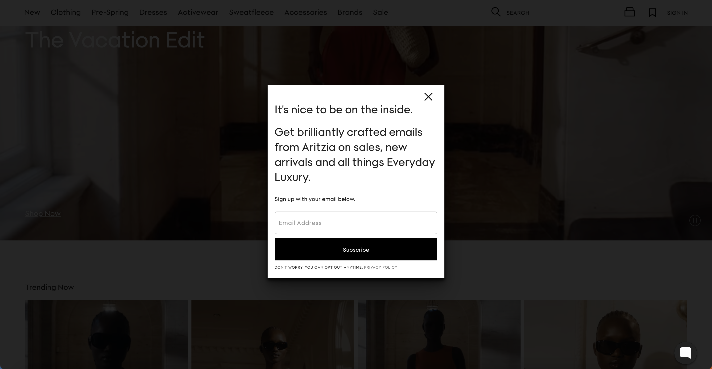Second State: Clicking "Subscribe" brings up a second page (email is already submitted at this point). It asks for an optional phone number for additional offers/info and includes checkboxes for preferred contact methods (Call me/Text me - can choose both).
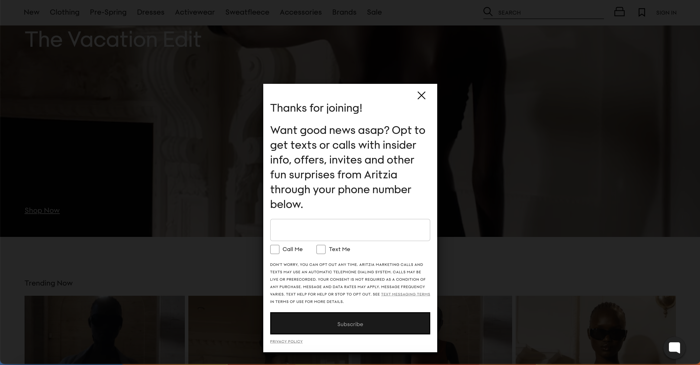 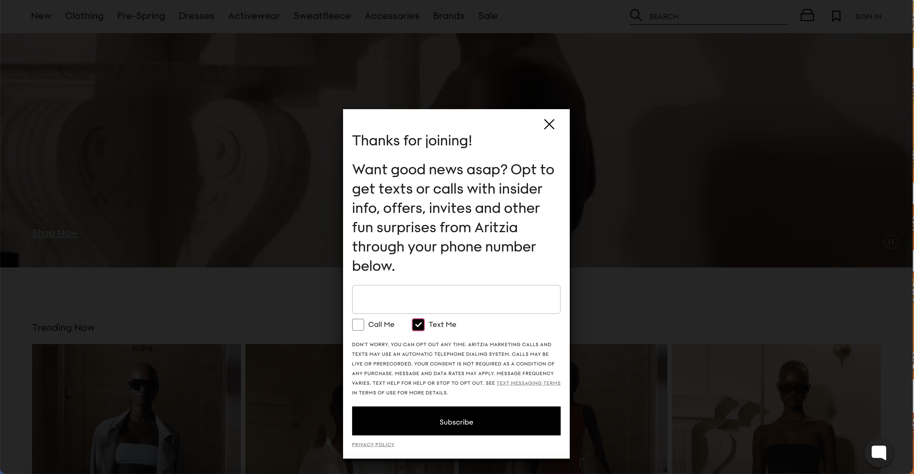Final State: Clicking "Subscribe" closes the popup.
Learnability, memorability, efficiency:
Learnability: This popup is quite easy to learn, but the second popup page with the optional phone number page and check boxes could be complicated for users to understand
Memorability: Users will likely remember how to use this, but may forget to use the check boxes
Efficiency: This popup is relatviely efficient
Comparison Table
| Interaction Method | Alo Yoga | Lululemon | Aritzia |
|---|---|---|---|
| Mouse/Touchpad |
- No focus or visual feedback when clicking the button. - Hovering over the submit or close button only changes the cursor, no other indication. - Action executes only on release of the click (not on press). - Holding the click and moving the cursor off the button prevents execution. |
- Submit button darkens when hovered over. - Clicking the submit button adds a pink outline (poor contrast). - Hovering over the close button only changes the cursor, no other indication. - Action executes only on release of the click. - Holding the click and moving the cursor off the button prevents execution. |
- Hovering or clicking the submit button darkens the “Subscribe” text. - Hovering over the close button only changes the cursor, no other indication. - Holding the click and moving the cursor off the button prevents execution. |
| Keyboard |
- Tab moves between clickable functions (Close, All 3 options, Selected Options, Text Box, Continue Box, Terms, Privacy). - Tab to navigate out of the selection menu (Women/Men/Both). - Does not allow tabbing between Women/Men/Both options, must use up/down or left/right keys. - When tabbing over the submit button, a black outline appears. - Pressing "Return/enter" selects and executes an option. |
- Tab moves between clickable functions (Close, Text Box, Submit, Terms, Privacy). - When tabbing over the submit button, a pink outline appears. - Pressing "Return/enter" executes button press. |
- Tab moves between clickable functions (Close, Text Box, Submit, Privacy Policy, Checkboxes on the second popup). - Checkboxes can be toggled with the spacebar. - When tabbing over submit button, there is a pink outline, and the text darkens (as it does when normal hovering). - Pressing "Return/enter" executes button press. |
| Touch (if available) | - N/A, did not pop up on mobile phone. | - Background is not scrollable with the popup. Readable, large text, takes up the entire screen. |
- N/A, did not pop up on mobile phone. |
Accessibility Table
| Category | Alo Yoga | Lululemon | Aritzia |
|---|---|---|---|
| Focus Order | - Mostly correct but skips agreement text and jumps directly to Terms & Privacy links. | - Skips all popup text, only reads close button, links, and submit button. | - Same as Lululemon, skips popup text entirely. |
| Understanding What the Popup Is/Does | - Reads “Alo 15% Off” once, but does not re-read when focus enters again. Users may not fully understand the purpose of the popup. | - No text inside the popup is read, users may not fully understand the purpose of the popup. | - No text inside the popup is read, users may not fully understand the purpose of the popup. |
| Tabbing Method | - Tabbing works, but thedropdown selection (Women/Men/Both) requires arrow keys, which is not announced to the user/might not be intuitive. It announces that links will open in new tab, which is helpful | - Tabbing is correct, but since no popup text is read aloud, users might miss important information. Does not announce that links will open in new tab | - Tabbing is correct, but since no popup text is read aloud, users might miss important information. Announces that checkboxes are checked/unchecked using space bar, also announces if the boxes are checked or not. Does not announce that link will open in the same tab, which could be confusing for users. |
| Names (Alt Text & Labels) | - Good alt text. | - Good alt text. | - Good alt text. |
| Other issues | - Black outline around continue button is not visually accessible, hard to see and distinguish from the button 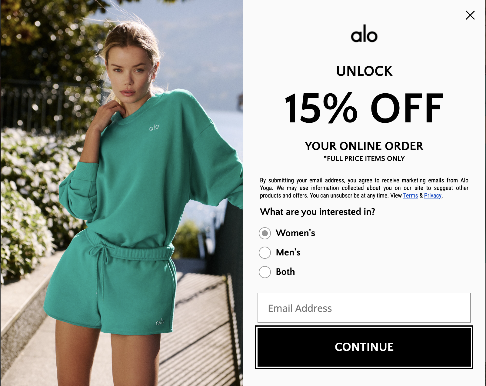 |
- Pink outline around the submit button when tabbed does not contrast strongly against the red button, not visually accessible. 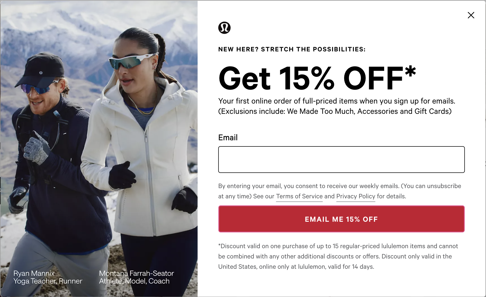 |
- Small size of check boxes could be difficult for someone who is motor/visually impaired to use. - Main text size is not very large, visually inaccessible. |
State Models and Redesign
Mouse User
Original state model:
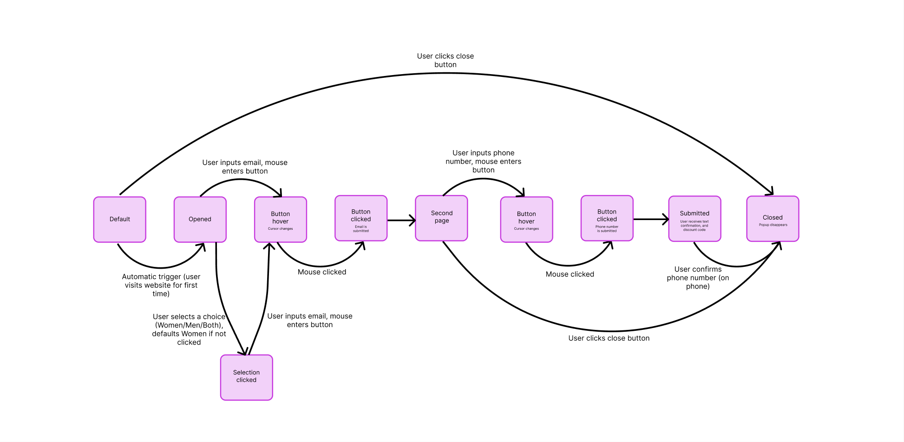Redesigned state model:
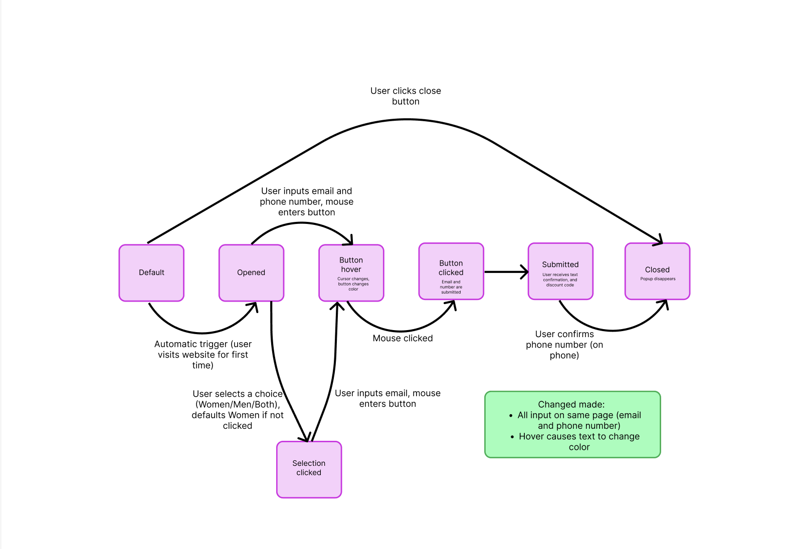Redesigned component (see changes made in green box above):
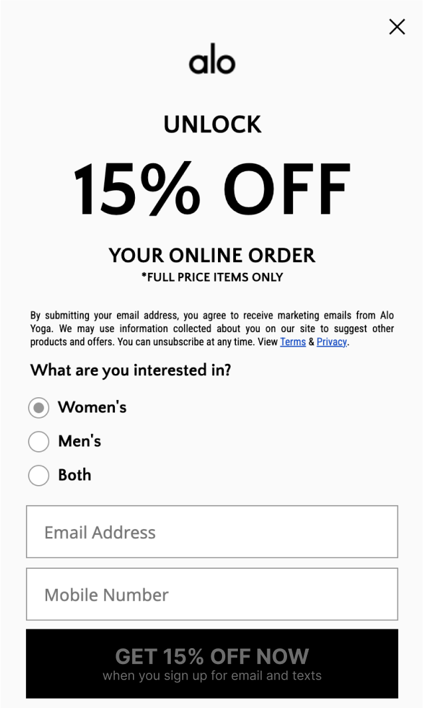For learnability and memorability, the addition of darkening the text during hover and click states makes it much more clear how the popup works/how the button works, which will make it much easier for users to remember. The difference in color during hover and click states will also make it easier for visually impaired people to recognize a difference in the states, helping accessibility. For efficiency, having all the input boxes on one page speeds up user interaction and reduces confusion.
Keyboard User
Original state model:
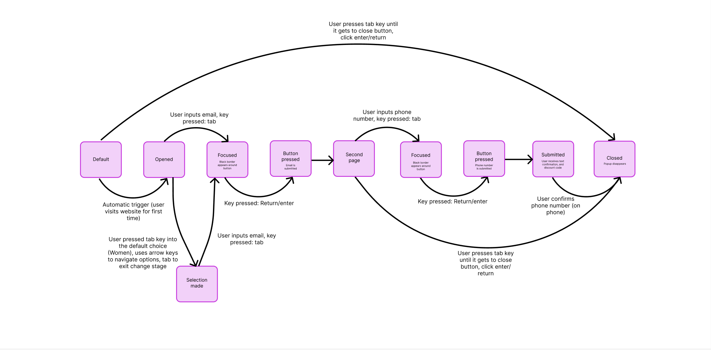Redesigned state model:
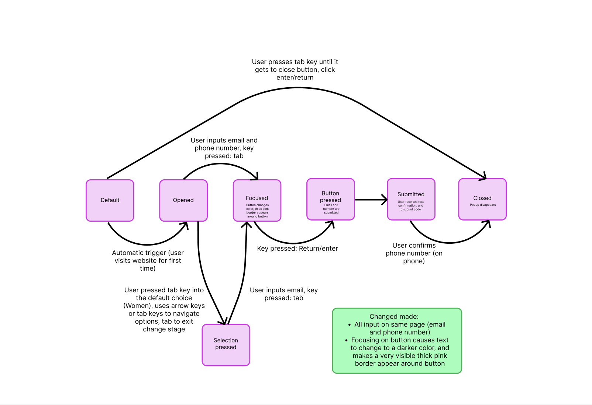Redesigned component (see changes made in green box above):
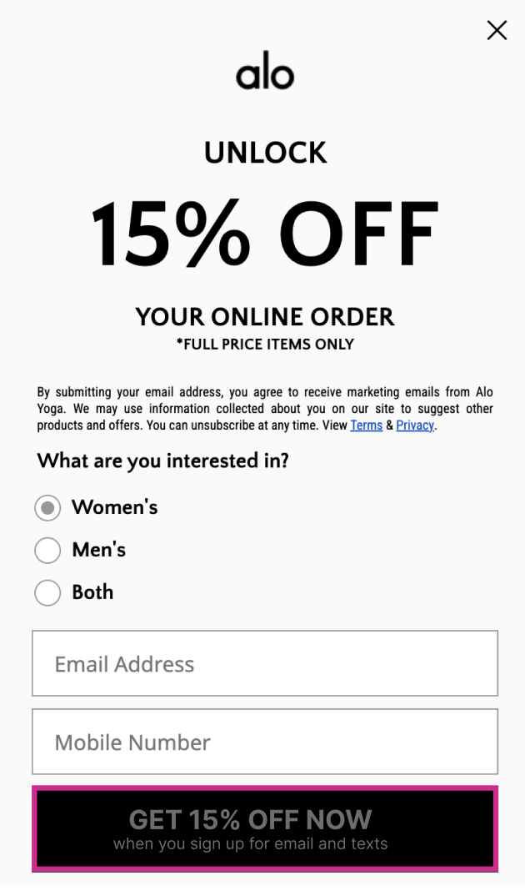For learnability and memorability, the addition of darkening the text and adding a clear, bright outline during focused and pressed states makes it much more easy to understand how the popup works/how the button works, which will make it much easier for users to remember. This will also make it easier for visually impaired people to recognize a difference in the states, as there is a clear, colorful contrast around the button, allowing them to easily see which component they are currently selecting, helping accessibility. For efficiency, having all the input boxes on one page speeds up user interaction and reduces confusion.
Reflection
- The components I observed did well in terms of usability and efficiency, with some of the popups (like Lululemon) allowing users to only input one thing (email) and click one button to get through the popup. I tried to apply this to my component by putting all the inputs on the same page to reduce steps.
- The components I observed that did well in terms of accessibility made it easy for visually impaired people to navigate. For example, darkening a button when it is being focused on clearly shows users what they are currently selecting. I applied this to my component by changing the submit button to have a thick, bright border around it. This helped solve a mismatch (a mismatched interaction between the features of a person’s body and the features of the environment in which they live), as it allowed people with visual impairments/blind users to use the popup regardless of their abilities.
- Alo Yoga’s selection menu (Women/Men/Both) was unclear for keyboard users because it did not indicate that arrow keys should be used to navigate the choices. I ensured users could also use the Tab key to navigate the choices, as that is often the most common instinct people have.
- Checkboxes being toggleable using the spacebar (which is also read out by the screen reader) helps users understand how to interact with them. This ensures that people who are blind or visually impaired can make the correct choices when interacting with these popups, making their experience more accessible.
- The lack of screen reader support that reads the information on the popups makes it harder for people who rely on screen readers (blind, visually impaired, etc.) to understand the purpose of the popup, making their interactions more difficult.
- I think mouse and touch/mobile users are commonly prioritized during the creation of components, which negatively affects people that use keyboards and screen readers (which could include disabled people, etc.) as their needs are often overlooked, making their lives harder, and their user experiences less positive.